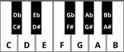

We briefly mentioned in Lesson 1 about octaves. In real life, there are a couple of things you need to know about them.
First, if you look at a piano keyboard, you will see that the keys are in a repeating pattern: seven white keys with five black keys interspersed within. They are the twelve tones we spoke of in Lesson 1. Each set of twelve tones on the piano keyboard is one octave. (A piano has more than seven octaves! The guitar has, at most, four.)

Second, if you were to play the piano, you would see that each octave (as you move to the right) is higher in pitch than the one preceding it. In fact, in terms of frequency, it is exactly double. Again, to our ears, it just sounds ‘higher’.
We may be asked to play or sing in a different octave, “Hey, can you play that down an octave?”. This simply means, “Can you play that using lower pitches?” The inverse would be true for ‘up an octave’.